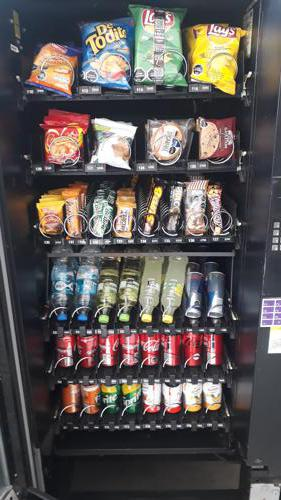
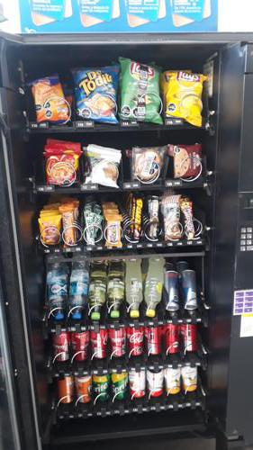

Antes de AbastecerNo se detectaron espirales vacios.

id 406.909 |
Luego de AbastecerNo se detectaron espirales vacios.

id 406.910 |
|
| Fecha |
Reporte |
Vacios ANT |
% Abast |
% Quiebre |
Sum QTY |
Rotación Diaria |
Abast hace (días) |
| 12-08-2021 |
Viendo |
0 |
6.6 |
- |
20 |
10 |
2 |
| 10-08-2021 |
Ver |
1 |
7.9 |
2.5 |
24 |
4 |
5 |
| 05-08-2021 |
Ver |
0 |
6.6 |
- |
20 |
10 |
2 |
| 03-08-2021 |
Ver |
0 |
7.9 |
- |
24 |
4 |
5 |
| 29-07-2021 |
Ver |
0 |
5.9 |
- |
18 |
9 |
2 |
| 27-07-2021 |
Ver |
0 |
5.9 |
- |
18 |
3 |
5 |
|
|
|
Se abasteció la máquina con:
Total de 20 unidades de 2 productos.
| Qty. |
Producto |
SubFamilia |
Familia |
| 10 |
Alfajor Bon O Bon Dos En |
Bañados |
Snack |
| 10 |
Papas Fritas Lays Evercri |
Salados |
Snack |
| Productos más abastecidos en últimas 6 semanas:
| Nro. Abast |
Qty/Abast |
Producto |
Abast hace (días) |
Fecha |
| 12 |
10 |
Coca Cola Lata 350 Cc |
2 |
10-08-2021 |
| 5 |
10 |
Super Ocho Clasico 24 Gr |
9 |
03-08-2021 |
| 5 |
8 |
Alfajor Bon O Bon Dos En |
0 |
12-08-2021 |
| 4 |
6 |
Jugo Manzana Golden 330 M |
23 |
20-07-2021 |
| 3 |
10 |
Negrita 20 Gr |
7 |
05-08-2021 |
| Productos menos abastecidos en últimas 6 semanas:
| Nro. Abast |
Qty/Abast |
Producto |
Abast hace (días) |
Fecha |
| 1 |
6 |
Vital C/Gas Pet 600Cc. |
2 |
10-08-2021 |
| 1 |
10 |
Frac Clasica Individual 3 |
7 |
05-08-2021 |
| 2 |
2 |
Galleta Din Don 24Ux46Gr |
23 |
20-07-2021 |
| 2 |
5 |
Galleta Arroz Maiz Pera S |
42 |
01-07-2021 |
| 2 |
6 |
Sprite Lata 350 Cc |
30 |
13-07-2021 |
|
|